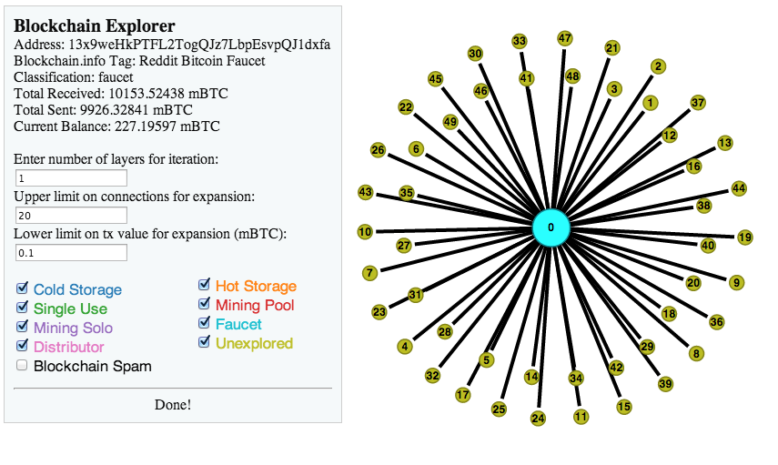

How often do random people (to whom we can tie an identity)'s transactions overlap (spend to the same place)?
Can we map a list of addresses to a single person based on following their spending and following of change (round numbers as generally not change, excepting in the case of buying USD-denominated purchases)
Can we identify companies/banks/gambling sites' cold storage by the connections and large storage of lots of people's money?
Can we determine what the main purpose of an address is (i.e. its classification) by looking at the spending patterns of that address?
Try to create a system where people can explore the blockchain and see these overlaps and classifications happen on addresses that they want to know more about.
The core of the explorer is written in python using Google AppEngine. The server makes requests to the blockchain.info API, and caches client-side results so that common requests aren't required to make the full query every time.
Using a system of following the change, we can have a good guess of grouping addresses with a root. When a Bitcoin transaction is sent, an entire output (or multiple) must be spent, meaning that in almost every case, there's some leftover change that should be returned to the user. In some cases this change goes back to the original address, but in cases where new addresses are generated for change, we can assume that if the transaction fits our model, the change output is going to an address controlled by the original entity.
When a transaction is sent, the amount sent is generally more round than the change. For example, if I have a balance of 314.159 mBTC, and I send 10 mBTC to someone, there will be one 10 mBTC output, and one 304.159 mBTC output. In this case, we assume that the rounder, smaller output is the actual output, and the less round number is the change. The address that the change now is in is grouped with the original.
In order to classify addresses, we use a decision tree based model. The possible labels are: Cold Storage, Hot Storage, Single Use, Mining Pool, Mining Solo, Faucet, Distributor, and Blockchain Spam. Based on known characteristics, looking at the transactions and spending/receiving history, we can make assumtions about the address. In the case where we aren't sure, it will be labeled Unknown or Hot Storage (the same for a typical online bitcoin address). Basic descriptions for each of these types are as follows:
This model has very high accuracy, as the defintions of these terms were basically built into the tree. In some strange cases where the address is a mixture, for example if the node is both a miner and a faucet, we will just return one, but these cases happen very rarely.
To add all of this data to a single screen and allow the user to view it as they wish, we created an interactive program in D3 that the user can see the nodes in. The demo contains a number of elements. When it starts up, you are given the option to pick a starting address (we also provide a suggested default if you just want to see how the demo works on a nice starting point). This will load in the starting address and will create it as a node in the graph. It will also load in nodes for each address that this starting address has sent money to. These nodes are considered 'unexplored:' this means that while we have them as an address, we haven't loaded any additional information about them. This distinction is made by the color of the nodes. Each node classification has its own color, which are indicated in a panel at the top left. Each node class can also be hidden or shown, using the appropriate check box at the top left.
Clicking on an unexplored node will fetch some basic data about that node, such as classification, total amount received and sent, and current balance. Clicking on any node will pop up some information about that node in our information box. If we can, we try to get a label for an address, which is something that a user will voluntarily add to their address. This marks it as being a particular entity, e.g. Reddit Bitcoin Faucet. The same goes for links - selecting a link will bring up some relevant information pertaining to that link. While selecting a link or a node you have the option to bring up relevant information on blockchain.info - for a node, this brings up a specific address. On a link, a user has the option to see any one of the transactions that we found between those two addresses.
Another important part of our information box is the fields that allow the user to set certain parameters about their search. This is used when exploring and grouping addresses. There are three important fields: number of layers, an upper limit on number of connections, and a threshold for a transaction amount. The first limits how many transactions we follow: for expanding, one layer means that we will look at the initial node you ask about and we will grab any addresses that they send (or receive) from, but we won't explore those nodes. A two layer expansion means that we will grab the initial node and any nodes it sends to / receives from, and then we will explore an addditional layer on each of these nodes. As one can imagine, this can quickly blow up and cause a huge number of nodes to get explored, causing a slow query. To handle this we added two extra tuning parameters. The first allows the user to limit the size of nodes we explore: in a two layer expand, if our original node sends to a node that has more than n neighbors (n being the limit set by thsi field) we will not explore beyond that node. Bitcoin value threshold works similarly: to deal with addresses such as faucets that send many tiny amounts to lots of addresses, this allows users to tell our program to not explore past transactions below a certain threshold amount. Together, these tuning fields help make our explorer easier to use with less worry of the query exploding very quickly, as is very possible (as we found when testing the initial versions of our explorer).
Grouping works similarly to exploring, wherein the tuning parameters are applied to see what we group on. An n layer group means that we will look at n transactions in each direction, ignoring transactions that our second two fields rule out, just as before. One difference between grouping and expanding is that expansion will go in one direction at a time as the user chooses. However, grouping will go in both directions at once. This is because it is somewhat irrelevant on the user's how we group the addresses: it is more relevant to see the result. However, with expansion the user may be more interested in an addresses's sending patterns than its receiving ones, so we allow the user to choose which direction they move in. Once a node is grouped, any nodes that are considered to be the same entity will combine with the node that is being grouped on. Any links to these other nodes will move to the new one. In addition, all currently known addresses associated with a given node are shown in our info box. If another node that is in this list is then added, grouping on the original node again will cause this new node to be absorbed as the last one was.
Here we have a single use address that has sent to two other addresses.
On grouping we see that one of those other addresses was grouped as being the same entity as the original one. Another address was found to be in the same group, but is not yet in the graph.
Now this other address has been added, and displays the same group in its info box as the original node now does.
Grouping on the original node again absorbs the newly added node into the original one.
Finally, there are some important hotkeys to know in order to use the program correctly. These are as follow:
This demo is available here. To help you in trying it out, here are some examples for some of the more difficult to find classifications (those that appear in smaller quantities):
Also, when adding an address you can add a list separated by commas and each address will be added.
On the whole, we were very satisfied with the information we were able to gain. We felt that our grouping was pretty accurate, and more importantly our classifications were consistently on point. While it is sometimes very difficult to tell what kind of address we are looking at, our decision tree did well in analyzing spending patterns and making assumptions based on this analysis. One obstacle that we faced here is that these distinctions aren't "real", meaning that there is no true distinction between a cold storage address and a faucet other than the spending patterns that we can identify. There is no master database that tells you which address is which. This made using a classifier rather difficult as we didn't have any real data to train on. We would have had to manually mark each address, and since we would be using basically the same rules as our decision tree for this process we thought that it made the most sense to just use the decision tree. We also made an interesting observation when looking at users who have given a self identifying tag to blockchain.info. Many of these users do not put the effort in to hide their spending patterns, and using our grouping algorithm we were able to trace many of these users and see where they spent their money. The result of this test is shown below:
The most noticeable trend here is that so many addresses are traced to sending to an address starting in '1dice': this is an address for a bitcoin gambling site. Different 1dice addresses have different chances of winning and payouts. As a whole, we found it interesting how people are willing to share their identity online but then can easily have their transactions traced, even if they are using multiple addresses. Grouping addresses was not particularly difficult, especially in certain situations, and some of the patterns shown here make it seem even more probably that our grouping is working correctly.
Hopefully you find these results as interesting as we did, and even more we hope you enjoy using the blockchain explorer. We found it to be a fun tool to play around with, and if you have any friends you know who are using Bitcoin (or even if you use it yourself) it may be interesting to see what you can find out about their spending just by exploring who they are making transactions with.